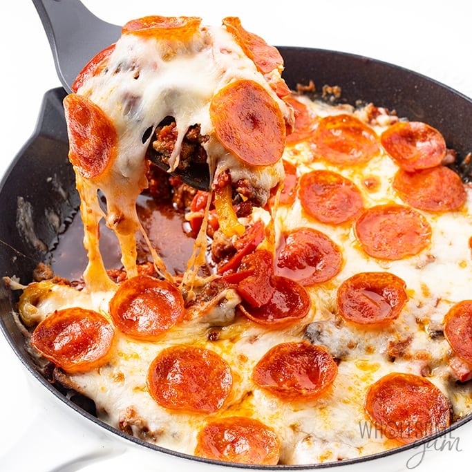

Crustless Pizza

Keto Friendly Pizza! Yumm!
For those of us who loves pizza but have been trying to start a keto lifestyle this is for you! This pizza alternative has all the toppings you love minus the carby bread
Ingredients
- 1 lb Ground Pork Sausage
- 1 large bell pepper(cut in thin strips)
- 8oz Cremini Mushrooms(sliced)
- 1 cup Marinara sauce
- 1 1/2 cups mozzarella cheese(shredded)
- 1 1/2 oz pepperoni slices
Steps
- Heat an oven-safe 10-inch cast iron skillet over medium-high heat. Add ground sausage. Cook for 8-10 minutes, breaking apart with a spatula, until browned and cooked through.
- Toward the end of cooking the sausage, preheat the oven to the Broil setting.
- Reduce heat to medium. Push the sausage to the edges of the pan, making a space in the center. Add mushrooms and bell peppers to the center. Cook for 5-8 minutes, stirring occasionally once they start to soften and moving any less cooked pieces toward the bottom, until vegetables are soft and any excess moisture has evaporated. (Add a little oil if the pan gets too dry.)
- Turn off heat. Pour the marinara sauce over the pan. Smooth evenly with a spatula.
- Sprinkle with shredded mozzarella. Arrange pepperoni slices on top.
- Transfer the skillet to the oven under the broiler. Broil for 2-3 minutes, until the cheese is melted and browned, and pepperoni starts to crisp up a little.